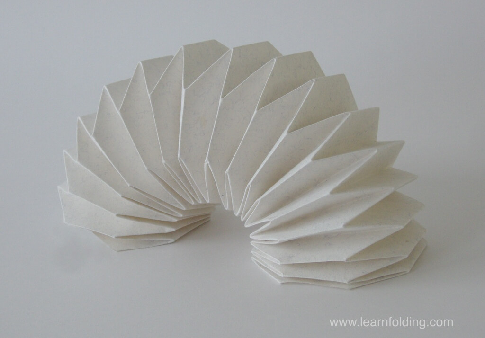
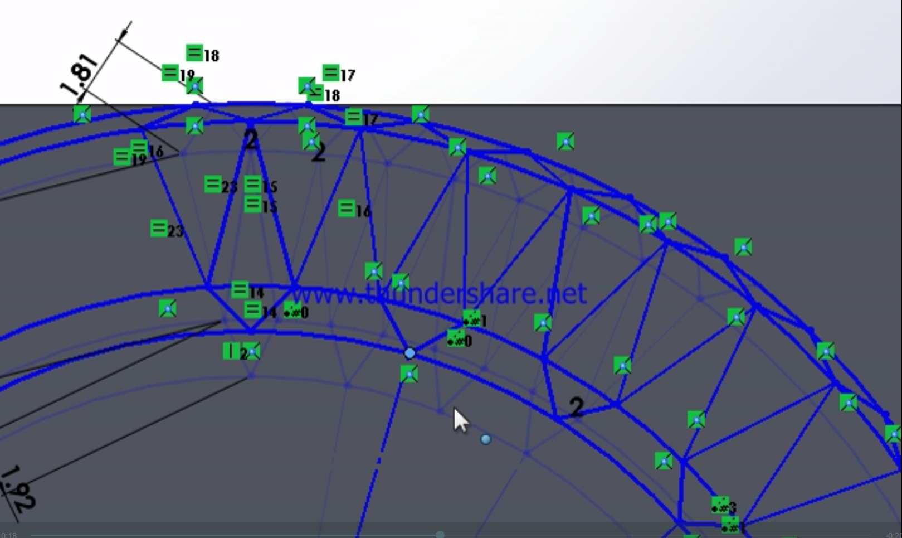
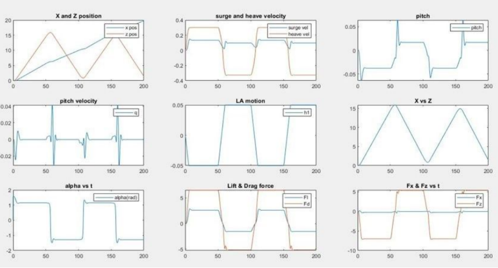

|
Internships
Summer 2019, University of Southampton
Design of a medical utility device for Rhinitis patients Market research and design of a consumer-friendly and economic version of nasal wash Preparation of a prototype using 3D printing Thermal analysis of heat dissipation for rapid cooling of water in the device Designed squeeze-action mechanism for ease of usage. Validated applicability and improvements through prototype demonstration
Winter 2018, National University of Southampton (Remote)
Design of Origami inspired compliant mechanisms for robotic applications Design and simulation of kinematics of planar, non-planar and parallel linkage mechanisms to understand their properties using SolidWorks & Adams Leveraging insights from analysis to develop mathematical models and simulation of origami inspired compliant mechanisms to be used for actuation in robots
 |
 |
Summer 2018, Indian Institute of Technology Madras
Mathematical Modelling & simulation of an Underwater Glider RoBuoy Studied the kinematics & dynamics of underwater robots, applying it to the underwater glider using MATLAB for mathematical modelling Prepared a simplified linear actuator model and fuselage model using Simulink and MATLAB Using the mathematical model to predict optimal values of wing parameters associated with the glider for minimal power consumption 
|